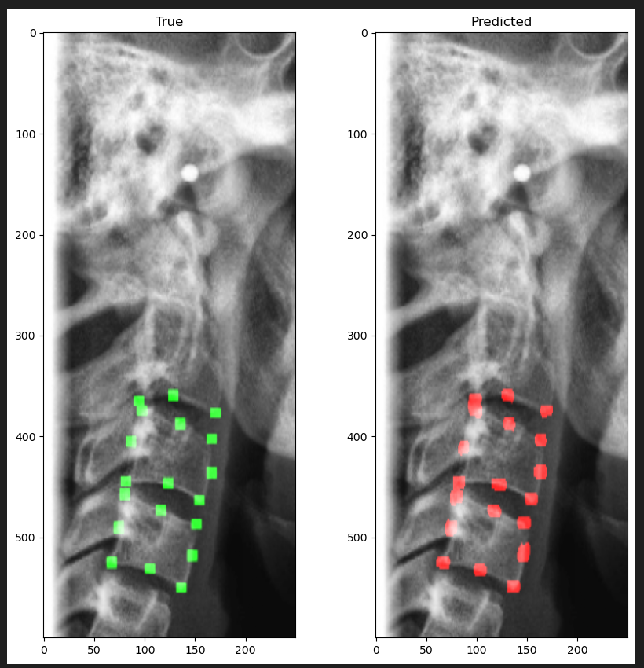

I build computational methods for
seeing, understanding, and intervening in disease.
Medical imaging researcher and engineer developing methods across
segmentation, registration, uncertainty, ablation assessment, and
clinically grounded AI.
AI-Based Automated Detection and Characterization of Bone
Lesions and Fractures on Pelvic Radiographs
Anirudha Shastri et al.
RSNA · 2025
Co-authored conference contributions
AI-Guided Ablation Assessment Framework for Clinical Workflows
Implemented as a 3D Slicer ExtensionSociety of Interventional Oncology · 2026 · Co-author
Spatial Analysis of Ablation Margins and Tumor Recurrence in
Microwave Lung AblationSociety of Interventional Oncology · 2026 · Co-author
03 / Experience
Research in translation.
2025—Present
Memorial Sloan Kettering Cancer Center
Senior Research Technician · Interventional Radiology · New York
Translational AI research across deformable registration,
diffusion segmentation, ablation assessment, lesion and fracture
detection, medical imaging pipelines, and optical spectroscopy.
Earlier
Healthcare AI & engineering
Applied machine learning and research engineering across clinical
data, computer vision, and healthcare workflows.
04 / Patent
Automated Cervical Vertebral Staging to determine skeletal
maturation using Lateral Cephalograms
Indian Patent Application No. 202541002362
Computer-vision based cervical vertebral staging using deep-learning
methods and landmark localization.

Landmark Detection for Bone Age PredictionU-Net and InceptionResNetV2 models implementing the staging
method above.GitHub ↗
05 / About
“I like problems where computation has to survive contact with
reality.”
My work sits between machine learning and clinical workflows, where
model performance is only part of the problem. Registration error,
image geometry, annotation quality, uncertainty, inference time, and
clinical usability all matter.
Outside the lab, I’m usually exploring tools, cameras, cycling
routes, 3D printing, electronic repair or the infrastructure that makes technical work possible.